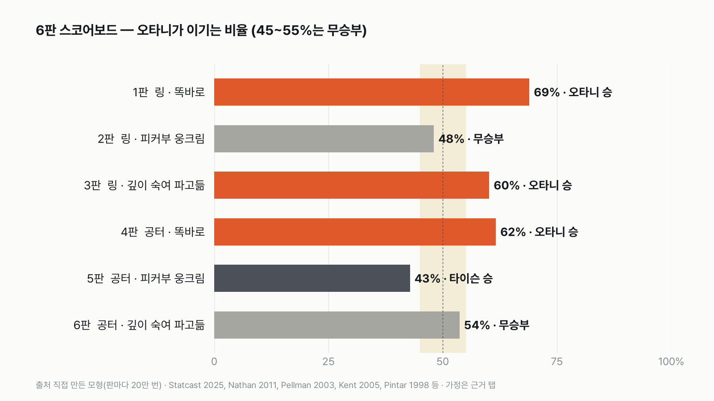
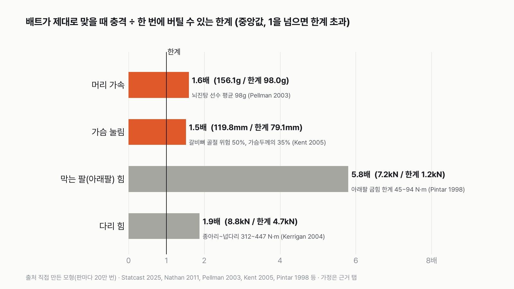
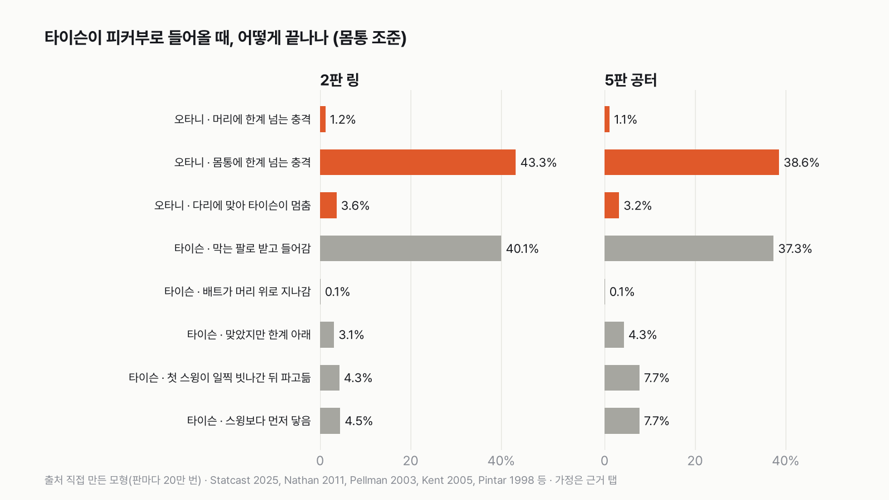
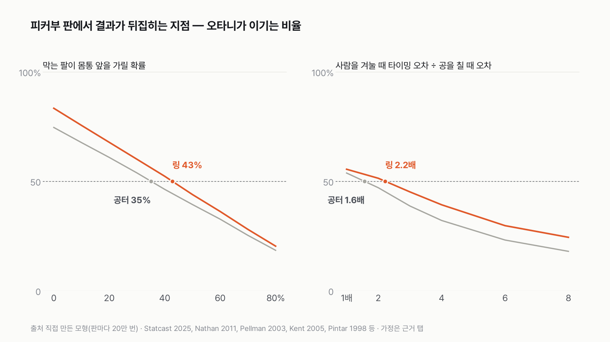
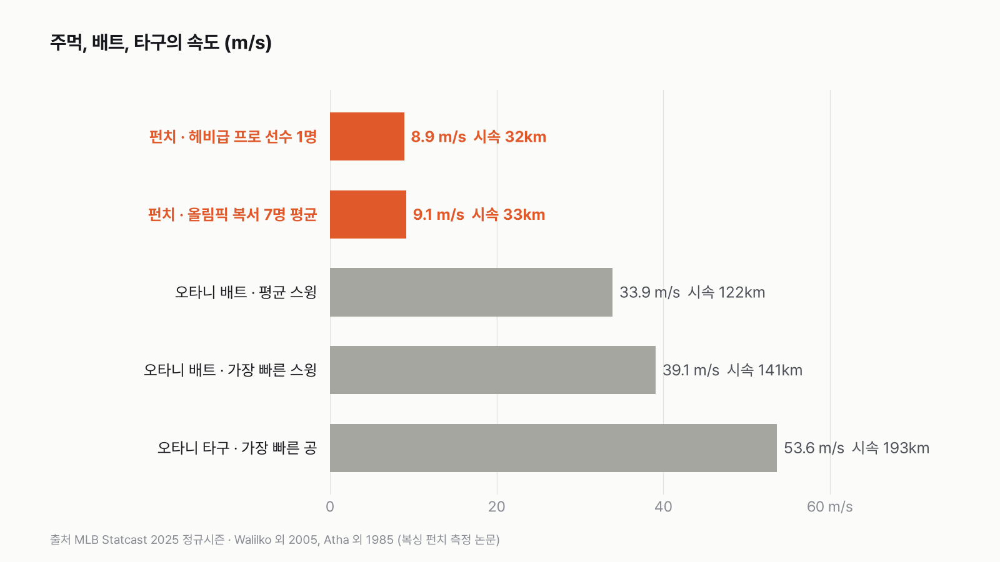

타이슨 vs 방망이 든 오타니, 둘 다 가장 잘하는 방법으로 붙으면 타이슨이 근소하게 이겨요
이 대결은 '타이슨의 팔이 배트 앞에 먼저 가 있느냐'로 갈려요. 몸통 앞을 43% 넘게 가리면 링에서도 타이슨이에요.

- 최종 판정은 타이슨 근소 우세예요. 타이슨이 자기 스타일(피커부로 웅크린 자세)로 들어오면 링에선 무승부(오타니 48%), 공터에선 타이슨 승(오타니 43%)이에요.
- 6판 전체로는 오타니 3승, 타이슨 1승, 무승부 2판이에요. 타이슨이 똑바로 서거나 깊이 숙이고 들어오면 오타니가 이겨요.
- 가장 흔한 장면은 두 가지예요. 배트가 몸통에 맞아 한계를 넘거나(오타니 승), 타이슨이 막는 팔로 받고 그대로 들어오거나(타이슨 승)예요.
| 판 | 규칙 · 타이슨 자세 | 승자 | 승부를 가른 숫자 |
|---|---|---|---|
| 1 | 링 · 똑바로 | 오타니 | 몸통에 한계 넘는 충격 64.0% |
| 2 | 링 · 피커부 | 무승부 | 몸통 43.3% vs 막는 팔로 받고 들어감 40.1% |
| 3 | 링 · 깊이 숙임 | 오타니 | 다리 맞음 15.1%까지 더해 60% |
| 4 | 공터 · 똑바로 | 오타니 | 몸통에 한계 넘는 충격 57.2% |
| 5 | 공터 · 피커부 | 타이슨 | 막는 팔 37.3% + 타이밍 빗나감 15.4% |
| 6 | 공터 · 깊이 숙임 | 무승부 | 오타니 54% |
최종: 타이슨이 자기 스타일로 들어오면 링은 무승부, 공터는 타이슨 승이라, 근소하게 타이슨이에요. 판 수로는 오타니가 3승 1패 2무로 앞서지만, 타이슨에게 고르라면 피커부를 고를 거예요.
먼저, 오타니는 제때 휘두를 수 있나 — 대부분 가능해요
지난 글에서 범위로만 넣었던 타이밍을 자료로 바꿨더니, 오타니가 생각보다 잘 맞혔어요. 공을 칠 때 오타니의 타이밍 오차는 0.0146초예요. 사람을 겨눌 때 이 오차를 1~4배로 키워도 중앙값이 0.036초예요. 링에서 타이슨이 배트 거리 안에 머무는 시간은 0.145초라, 배트가 그 틈 안에 들어가는 경우가 91%였어요. 공터에서는 타이슨이 더 빠르게 지나가서(0.112초) 85%예요.
맞으면 어떻게 되나 — 머리·몸통은 한계를 넘어요
배트가 제대로 맞으면 숫자는 분명했어요. 2판 기준 중앙값으로 머리 가속은 156g로 뇌진탕 선수 평균(98g)의 1.6배, 가슴 눌림은 120mm로 갈비뼈 골절 위험 50% 기준(79mm)의 1.5배예요. 머리에 맞은 경우의 89%, 몸통에 맞은 경우의 94%가 한계를 넘었어요. 넘지 않은 건 타이슨이 너무 안쪽까지 들어와 배트 손잡이 쪽에 맞은 경우예요.

막는 팔은? — 팔은 한계를 넘지만, 타이슨은 멈추지 않아요
이 대결의 핵심은 여기였어요. 막는 아래팔에 걸리는 힘은 중앙값 7.2kN으로, 팔이 굽힘에 버티는 한계(1.2kN 안팎)의 5.8배예요. 막은 팔은 매번 한계를 넘었어요. 그런데 그 충격이 타이슨 몸 전체(100kg으로 가정)를 늦추는 정도는 초속 0.25m였어요. 초속 3~5m로 들어오던 타이슨은 거의 그대로 들어와요. 오타니가 다시 휘두르려면 0.5~1초가 필요하니, 막는 팔로 받은 타이슨이 다른 손으로 먼저 닿아요.
1판 링 · 똑바로 — 오타니 승
타이슨이 똑바로 서서 들어오면 몸통이 넓게 열려 있어요. 막는 팔이 몸통 앞을 가릴 확률을 10~30%로 낮게 잡으면, 오타니가 몸통을 노려 한계를 넘기는 경우가 64.0%예요. 머리를 노리면 오타니 49%라, 큰 과녁인 몸통이 낫더라고요. 오타니 69%로 이 판은 오타니 차지예요.
2판 링 · 피커부 — 무승부
타이슨의 원래 자세인 피커부는 두 팔을 몸 앞에 붙이고 웅크려요. 막는 팔이 머리 앞을 가릴 확률을 50~80%, 몸통 앞을 30~60%로 잡았어요. 그러자 두 장면이 거의 같은 비율로 나왔어요. 배트가 팔을 피해 몸통에 맞는 경우 43.3%, 막는 팔로 받고 들어가는 경우 40.1%예요. 오타니 48%로 무승부 구간 안이에요. 이 판의 두 장면이 이 글 전체에서 가장 흔한 장면이에요.

3판 링 · 깊이 숙임 — 오타니 승
깊이 숙이면 머리가 1.05~1.30m로 내려가 몸통 높이의 배트와 겹쳐요. 다리도 배트 높이에 가까워져요. 다리에 맞아 한계를 넘는 경우가 15.1%로 여섯 판 중 가장 많았고, 몸통 38.9%와 더해 오타니 60%예요. 숙이는 자세는 이 대결에선 손해였어요.
4판 공터 · 똑바로 — 오타니 승
공터에서는 타이슨이 멀리서 최고 속도로 들어와 배트 거리 안에 머무는 시간이 짧아요. 그래서 링보다 오타니가 조금 덜 이겨요. 그래도 똑바로 선 타이슨에게는 몸통 맞음 57.2%로, 오타니 62%예요.
5판 공터 · 피커부 — 타이슨 승
공터에 피커부까지 겹치면 타이슨 쪽으로 넘어가요. 막는 팔로 받고 들어가는 경우가 37.3%이고, 오타니의 타이밍이 빗나가는 경우(일찍 7.7%, 늦게 7.7%)가 링의 두 배 가까이로 늘었어요. 오타니 43%, 타이슨 57%예요.
6판 공터 · 깊이 숙임 — 무승부
숙인 자세는 공터에서도 다리 맞음(13.5%)이 많았어요. 오타니 54%로 무승부 구간의 끝이에요.
어디서 뒤집히나
결과를 가장 크게 흔드는 숫자는 '타이슨의 팔이 몸통 앞을 얼마나 가리느냐'예요. 피커부 판에서 이 확률만 바꿔 보면, 링에서는 43%, 공터에서는 35%를 넘는 순간 타이슨이 더 자주 이겨요. 두 번째는 오타니의 타이밍 오차예요. 사람을 겨눌 때 오차가 공을 칠 때의 2.2배(링), 1.6배(공터)를 넘으면 타이슨 쪽이에요.

반대 조건도 돌렸어요. 막는 팔로 받는 순간에도 끝난다고 보면(팔이 한계를 넘으면 더 못 싸운다고 보면), 피커부 판에서도 오타니가 88%(링), 80%(공터)로 이겨요. '막고 들어간다'는 규칙 하나가 판정을 정하는 거라, 이 규칙을 다르게 보는 사람에게는 오타니가 이기는 대결이에요.
속도만 놓고 보면 주먹은 초속 9m 안팎이고, 오타니 배트는 평균 초속 33.9m예요. 그런데 이 모형에서 승부를 정한 건 배트 속도가 아니었어요. 타이슨의 팔이 어디 있느냐, 오타니가 0.1초 안쪽으로 맞추느냐였어요.

이 숫자는 어디서 왔나요
출처
기준일 오타니 측정값은 2025년 정규시즌(Statcast, 2026년 11월 6일 받음). 모형은 2026년 11월 6일에 돌렸어요.
MLBStatcast
- 배트 트래킹 (Baseball Savant)원본 보기
오타니 2025년 배트 속도, 스윙 길이, 스퀘어드업 비율
Nakashima 외 2025,Frontiers in Sports and Active Living
- 스위트스폿 타이밍 허용 폭doi:10.3389/fspor.2025.1557145원본 보기
공을 칠 때 타이밍 오차를 역산하는 기준
Kidokoro 외 2019,Human Movement Science
- 타격 타이밍 허용 오차doi:10.1016/j.humov.2019.06.011원본 보기
직구 ±7.9 ms(참고)
Higuchi 외 2016,PLoS ONE
- 보고 동작을 고치는 시간doi:10.1371/journal.pone.0148498원본 보기
반응 150~200 ms, 배트 가속~맞는 순간 약 180 ms
Nathan 외 2011,Sports Engineering
- 나무 배트 실측doi:10.1007/s12283-011-0065-4원본 보기
배트 질량·무게중심·관성모멘트
Nathan 2003,American Journal of Physics
- 배트 유효 질량 식doi:10.1119/1.1522699원본 보기
맞는 지점별 유효 질량
Pellman 외 2003,Neurosurgery
- 뇌진탕 머리 가속doi:10.1227/01.NEU.0000083559.68424.3F원본 보기
머리 한계 98 g
Kent·Patrie 2005,Forensic Science International
- 갈비뼈 골절 위험doi:10.1016/j.forsciint.2004.04.086원본 보기
가슴 눌림 한계(가슴두께의 35%)
Pintar 외 1998,SAE
- 아래팔 굽힘 강도doi:10.4271/983149원본 보기
막는 팔 한계 45~94 N·m
Kerrigan 외 2004,International Journal of Crashworthiness
- 다리뼈 굽힘 강도doi:10.1533/ijcr.2004.0315원본 보기
다리 한계 312~447 N·m
Walilko·Viano·Bir 2005,British Journal of Sports Medicine
- 올림픽 복서 펀치 측정doi:10.1136/bjsm.2004.014126원본 보기
펀치 속도(참고)
미국 주 체육위원회 규정
- 링 규격 (Wisconsin SPS 192.37 등)
링 한 변 16~20피트(4.9~6.1m)
어떻게 셌나요
- 규칙 2개: 링(한 변 6.1m, 미국 주 규정이 허용하는 가장 큰 크기)에서는 오타니가 물러날 곳이 없어 타이슨이 1.8~2.6m에서 뛰어들어요. 공터에서는 오타니가 거리를 지켜 타이슨이 4~8m에서 다가와요.
- 판정: 배트가 머리나 몸통에 맞아 버틸 수 있는 한계를 넘으면 오타니 승이에요. 타이슨 주먹이 먼저 닿으면 타이슨 승이에요. 막는 팔에 맞으면 타이슨은 계속 들어와요. 다리가 한계를 넘으면 타이슨이 멈춘다고 보고 오타니 승으로 쳤어요.
- 무승부 기준은 미리 정했어요. 오타니가 이기는 비율이 45~55%면 무승부예요.
- 타이밍: 오타니가 타이슨이 오는 걸 보고 동작을 바꾸는 데 0.15~0.20초, 휘두르는 데 0.14~0.18초가 걸려요. 공을 칠 때 오타니의 타이밍 오차는 0.0146초로 계산했어요. 2025년 스윙의 25.1%가 스퀘어드업(낼 수 있는 가장 센 타구에 가깝게 맞힌 것)이었고, 스위트스폿으로 맞힐 수 있는 시간 폭이 9.36ms(Nakashima 2025)라는 데서 거꾸로 낸 값이에요. 사람은 공보다 예측하기 어려우니 그 1~4배로 넣었어요.
- 맞는 부위: 타이슨 자세는 셋으로 나눴어요. 똑바로 선 자세, 피커부(두 팔을 얼굴·몸통 앞에 붙이고 웅크린 타이슨의 자세), 깊이 숙여 파고드는 자세예요. 자세마다 머리·몸통·다리 높이와 막는 팔이 앞을 가릴 확률을 정했어요. 오타니는 판마다 머리와 몸통 중 더 잘 되는 쪽을 노려요.
- 충격: 배트의 유효 질량(맞는 순간 상대에게 실제로 실리는 무게)은 Nathan 2011이 잰 나무 배트로 계산하면 스위트스폿에서 0.68kg이에요. 팔이 함께 실리는 걸 감안해 1~1.5배로 넣었어요. 이 무게가 맞는 지점의 속도로 부딪힐 때의 머리 가속, 가슴 눌림, 팔·다리에 걸리는 힘을 냈어요.
한계 6가지
이 데이터로 말할 수 없는 것
- 모형이에요. 실제로 붙여 본 결과가 아니고, 규칙과 가정을 바꾸면 숫자가 바뀌어요. 그래서 뒤집히는 지점과 반대 조건을 같이 적었어요.
- 자세별 높이, 막는 팔이 앞을 가릴 확률, 타이슨 전진 속도, 헛스윙 뒤 회복 시간, 사람을 겨눌 때 타이밍 오차가 공의 몇 배인지는 공개된 측정이 없어서 범위로 가정했어요. 피커부 자세를 숫자로 잰 연구는 찾지 못했어요.
- 충격 계산은 단순한 충돌 식이에요. 접촉 시간(3~8ms), 가슴 강성, 머리·팔·다리 유효 질량은 범위로 넣었어요. 뼈 굽힘 한계를 힘으로 바꿀 때는 받침 간격을 가정했어요.
- 한계 기준은 자동차 충돌·스포츠 부상 연구의 기준이에요. 사람마다 다르고, 맞는 각도에 따라서도 달라요.
- 타이슨 본인의 펀치·체중 측정값은 쓰지 않았어요. 인터넷에 도는 '1,600파운드', '800줄' 같은 숫자는 원래 연구를 찾을 수 없었어요. 체중 100kg은 계산용 가정이에요.
- 다치는 장면은 다루지 않았어요. 숫자와 '한계를 넘는다/안 넘는다'까지만 적었어요.
계산 기록
쓰기 전에 정한 것
- 이 글은 세 번째 판이에요. 첫 판은 속도만 나란히 놓았고, 둘째 판은 규칙 3개로 승률을 냈어요. "오타니는 배트를 들었을 뿐 공을 치지 않는다"는 지적을 받아 '타구로 맞히기' 규칙을 빼고, 맞는 부위와 충격을 넣어 다시 썼어요.
- 무승부 기준(45~55%), 판 구성(규칙 2 × 자세 3), 한계 기준(머리 98g, 가슴두께 35%, 팔·다리 굽힘 한계)은 모형을 돌리기 전에 정했어요.
- 반응·타이밍은 지난 판의 가정 대신 연구·Statcast 자료로 바꿨어요.
- 다치는 묘사는 하지 않기로 했어요.
처음 던진 질문
마이크 타이슨(맨주먹)과 방망이를 든 오타니 쇼헤이가 붙으면 누가, 어떻게 이길까요? 오타니는 배트를 들고만 있어요. 공은 없어요. 규칙을 먼저 정하고, 타격 타이밍·배트 물리·사람이 한 번에 버틸 수 있는 충격의 한계를 연구 자료로 넣어 판마다 20만 번씩 돌렸어요.
수집·검증 기록
- 모형: pipelines/model_tyson_ohtani_v3.py, 판마다 20만 번(민감도 4만 번), 씨앗 20261106.
- 타이밍: 반응 0.15~0.20 s(Higuchi 2016), 스윙 0.14~0.18 s(Statcast 2L/v = 2×2.418/33.90 = 0.143 s, Higuchi 2016이 인용한 Shaffer 1993 약 0.18 s). 공에 대한 타이밍 오차 σ = 4.68 ms / z, z는 양쪽 확률 0.251(스퀘어드업/스윙)에 해당하는 0.32 → 14.6 ms. 사람은 ×1~4, 중앙값 36.5 ms. 배트 구간에 머무는 시간 중앙값 링 145 ms, 공터 112 ms. 제때 휘두른 비율 링 0.913, 공터 0.845.
- 배트: Nathan 2011 나무 배트 0.88 kg, 무게중심 노브에서 0.58 m, I_cm 0.050 kg·㎡(노브 기준 0.346에서 환산), 기준 타격점 0.71 m. 유효 질량 1/(1/M + (z−z_cm)²/I_cm) = 0.68 kg(z = 0.71 m). 팔 함께 실림 ×1~1.5. 스위트스폿 속도 30.0~39.1 m/s(Statcast 평균 33.9, 최고 39.1). 맞는 지점 속도 = 스위트스폿 속도 × r/R_B.
- 충격: 충격량 J = (1+e)·μ·v, μ = m·M/(m+M), e 0~0.3, 접촉 시간 3~8 ms. 머리 가속 = J/M_head × π/(2Δt), M_head 4.5~6 kg. 가슴 눌림 = v·√(μ/k), M_torso 15~25 kg, k 30~90 kN/m. 팔·다리 힘 = J/Δt × π/2, M_arm 2~4 kg, M_leg 8~12 kg. 한계 힘 = 4M/L(3점 굽힘), L 팔 0.20~0.25 m, 다리 0.30~0.35 m.
- 2판 중앙값: 맞는 지점 속도 30.3 m/s, 유효 질량 0.96 kg. 머리 156.1 g(한계 98, 넘은 비율 0.892), 가슴 119.8 mm(한계 79.1, 0.942), 아래팔 7.17 kN(한계 1.23 kN, 1.000), 다리 8.77 kN(한계 4.67 kN). 막은 뒤 타이슨 감속 = J_arm/100 kg = 0.25 m/s.
- 자세(높이 m, 막는 팔 확률 머리/몸통): 똑바로 머리 1.53~1.78, 몸통 1.00~1.53, 0.2~0.4/0.1~0.3. 피커부 1.38~1.63, 0.88~1.38, 0.5~0.8/0.3~0.6. 깊이 숙임 1.05~1.30, 0.80~1.05, 0.4~0.7/0.2~0.4. 맞는 높이 오차 0.08~0.20 m.
- 판 결과(오타니 승률, 머리 조준/몸통 조준): 링 똑바로 0.492/0.690, 피커부 0.267/0.481, 숙임 0.346/0.602. 공터 똑바로 0.434/0.616, 피커부 0.237/0.428, 숙임 0.307/0.537. 모든 판에서 몸통 조준이 나음.
- 갈래(2판 링 피커부 몸통): 몸통 한계 넘음 0.433, 막는 팔 0.401, 일찍 빗나감 0.043, 늦음 0.045, 다리 0.036, 한계 아래 0.031, 머리 0.012, 머리 위로 지나감 0.001. 5판: 0.386, 0.373, 0.077, 0.077, 0.032, 0.043, 0.011, 0.001.
- 뒤집히는 지점(선형 보간): 몸통 막는 팔 확률 링 0.427, 공터 0.351. 타이밍 오차 배수 링 2.22(32 ms), 공터 1.56(23 ms). 반대 조건(막는 팔도 오타니 승): 링 0.879, 공터 0.799.
- 차트: pipelines/chart_odd_tyson_v3.py(스코어보드·갈래·충격·뒤집힘), pipelines/chart_odd_tyson_ohtani_speed.py(속도). 마트: data/mart/odd/tyson_v3_rounds.csv, tyson_v3_impacts.csv, tyson_v3_sens.csv, tyson_ohtani.csv.
새 글 나오면 받아 보기
피드 리더 앱에 이 사이트 주소를 한 번 넣어 두면, 새 글이 올라올 때 앱에 떠요. 가입이나 메일 주소는 필요 없어요.
받는 법 보기
- 피드 리더 앱을 하나 골라요. 새 글을 모아 보여 주는 앱이에요. 예를 들면 Feedly나 Inoreader가 있어요. 둘 다 무료고 웹·휴대폰에서 써요.
- 앱에서 '구독 추가'(+)를 누르고 아래 주소를 붙여 넣어요.
- 끝이에요. 새 글이 올라오면 앱 목록에 떠요.
https://protofu.github.io/opendata-insight/feed.xmlFeedly를 쓴다면 여기를 눌러 바로 추가할 수도 있어요.